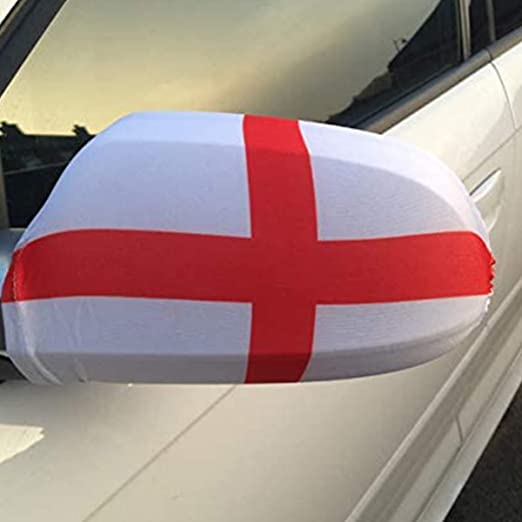
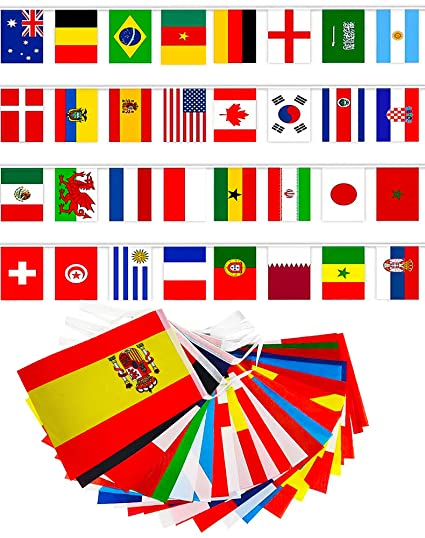
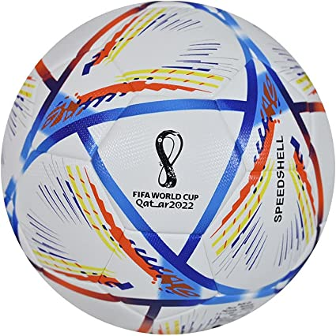

Football is cancelled so what to do this weekend?
As a mark of respect after the death of Queen Elizabeth II at the age of 96, the Football Association and the Premier League have made the decision to postpone all football fixtures this weekend. So we here at UKtrends decided to come up with a few shopping ideas to help pass the time and prepared for the upcoming FIFA World Cup that kicks off in Qatar from the 18th of December.
We can image hooligans up and down the country will be very confused this weekend as they find themselves without a target for all their pent up anger, perhaps with a little distraction we can save a few immigrants and the EU from becoming their new target.
Have a
look at a few of our suggestions and perhaps you can find
something to get into the mood for what probably will bea another
World Cup for English fans, and as a bonus this year the Welsh can
join in with the misery

Make your car a target
These England flag mirror decorations will make your car look great this November and they are a great way to demonstrate how patriotic you are. The downside is that your car may become a target for a drunk foreign tourist on their way back from the pub after watching their team loose. Visit Shop
Decorate your pub
This International Flag Collection contains all 32 teams taking part in the FIFA World Cup and are particularly good to decorate your pub during the tournament. It is unlikely that your establishment will still be open come November as you take a second mortgage to afford your energy bills, but if you are still open for business go mad and order a few of these. They also work really well to decorate your house and let the neighbours know that you definitely didn't vote for Brexit. Visit Shop

Still time to make the team
If you fancy yourself as a bit of a footballer then there is still time to get called by Gareth Southgate to defend England this year. This football is ideal for you to sharpen your skills until then. We can't promise that you will make the team but it might help lose that beer gut and it will definitely help you and the kids keep warm this winter. Rather than buying a new kettle or putting on another jumper, just kick the ball about for a couple of hours and you will be able to turn the thermostat down a few deg Visit Shop